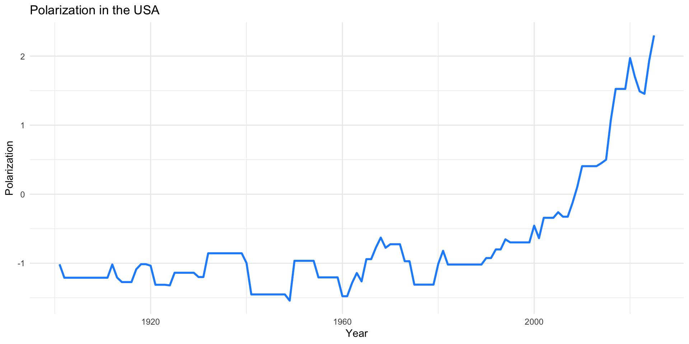
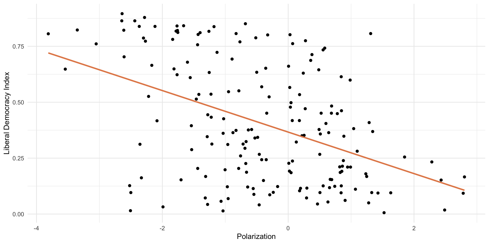
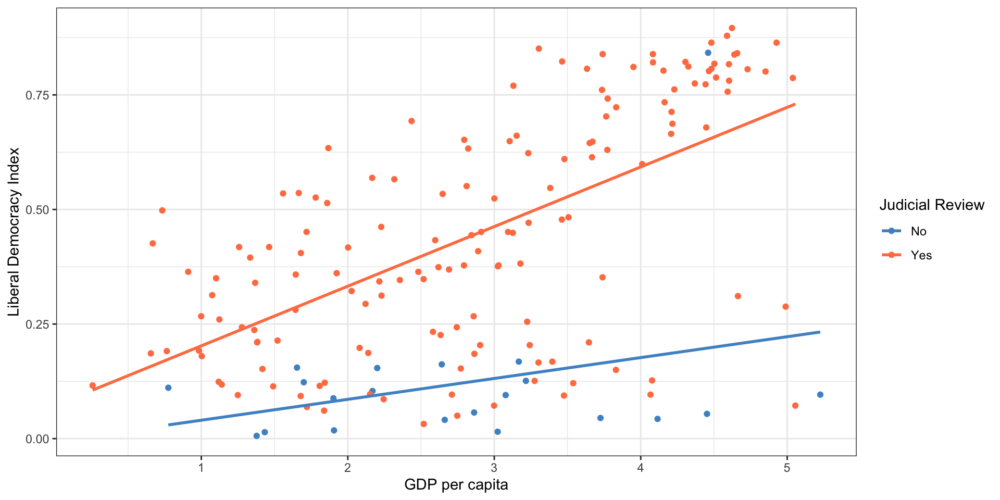
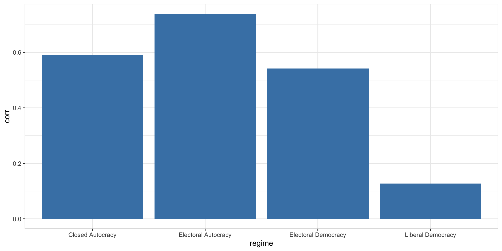

Multiple Regression
May 20, 2026
Load packages
Load VDEM Data
modelData <- vdem |>
filter(year == 2006) |>
select(country_name,
libdem = v2x_libdem,
wealth = e_gdppc,
oil_rents = e_total_oil_income_pc,
polarization = v2cacamps,
corruption = v2x_corr,
judicial_review = v2jureview_ord,
region = e_regionpol_6C,
regime = v2x_regime) |>
mutate(log_wealth = log(wealth),
region = factor(
region,
labels=c("Eastern Europe",
"Latin America",
"MENA",
"SSAfrica",
"Western Europe and North America",
"Asia and Pacific"))
)
glimpse(modelData)Rows: 177
Columns: 10
$ country_name <chr> "Mexico", "Suriname", "Sweden", "Switzerland", "Ghana"…
$ libdem <dbl> 0.478, 0.649, 0.879, 0.841, 0.634, 0.661, 0.773, 0.018…
$ wealth <dbl> 31.873, 22.316, 98.394, 105.485, 6.471, 23.398, 84.983…
$ oil_rents <dbl> 694.847, 639.506, 0.000, 0.000, 6.380, 10.060, 2.635, …
$ polarization <dbl> 0.035, -1.815, -2.283, -1.767, -0.500, 0.006, -2.269, …
$ corruption <dbl> 0.609, 0.199, 0.004, 0.023, 0.625, 0.444, 0.108, 0.878…
$ judicial_review <dbl> 1, 1, 1, 1, 1, 1, 1, 0, 1, 1, 1, 0, 1, 1, 1, 1, 1, 1, …
$ region <fct> Latin America, Latin America, Western Europe and North…
$ regime <dbl> 2, 2, 3, 3, 3, 3, 3, 0, 1, 2, 1, 1, 2, 3, 2, 3, 3, 2, …
$ log_wealth <dbl> 3.461759, 3.105304, 4.588980, 4.658569, 1.867331, 3.15…Linear Model with Multiple Predictors
- Previously, we were interested in GDP per capita as a predictor of democracy
- Now, let’s consider another predictor: polarization (also measured by V-Dem)
Polarization Measure in the USA

Polarization and Democracy in 2006

Model with One Predictor
Call:
lm(formula = libdem ~ polarization, data = modelData)
Residuals:
Min 1Q Median 3Q Max
-0.58420 -0.17264 -0.03252 0.18056 0.56220
Coefficients:
Estimate Std. Error t value Pr(>|t|)
(Intercept) 0.36649 0.01895 19.34 < 2e-16 ***
polarization -0.09282 0.01404 -6.61 4.47e-10 ***
---
Signif. codes: 0 '***' 0.001 '**' 0.01 '*' 0.05 '.' 0.1 ' ' 1
Residual standard error: 0.2398 on 175 degrees of freedom
Multiple R-squared: 0.1998, Adjusted R-squared: 0.1952
F-statistic: 43.7 on 1 and 175 DF, p-value: 4.466e-10Significance?
Model with Two Predictors
Call:
lm(formula = libdem ~ polarization + log_wealth, data = modelData)
Residuals:
Min 1Q Median 3Q Max
-0.66770 -0.15112 0.04516 0.17776 0.42283
Coefficients:
Estimate Std. Error t value Pr(>|t|)
(Intercept) 0.09668 0.04423 2.186 0.0302 *
polarization -0.05779 0.01372 -4.213 4.08e-05 ***
log_wealth 0.09998 0.01495 6.687 3.14e-10 ***
---
Signif. codes: 0 '***' 0.001 '**' 0.01 '*' 0.05 '.' 0.1 ' ' 1
Residual standard error: 0.216 on 170 degrees of freedom
(4 observations deleted due to missingness)
Multiple R-squared: 0.3656, Adjusted R-squared: 0.3582
F-statistic: 48.99 on 2 and 170 DF, p-value: < 2.2e-16Model with Two Predictors
\[\hat{Y_i} = a + b_1*Polarization + b_2*GDPpc\]
\[\hat{Y_i} = 0.18 + -0.05*Polarization + 0.10*GDPpc\]
Model with Two Predictors
\[\hat{Y_i} = a + b_1*Polarization + b_2*GDPpc\]
\[\hat{Y_i} = 0.18 + -0.05*Polarization + 0.10*GDPpc\]
\(a\) is the predicted level of Y when BOTH GDP per capita and polarization are equal to 0
Model with Two Predictors
\[\hat{Y_i} = a + b_1*Polarization + b_2*GDPpc\]
\[\hat{Y_i} = 0.18 + -0.05*Polarization + 0.10*GDPpc\]
- \(b_1\) is the impact of a 1-unit change in polarization on the predicted level of Y, holding GDP per capita fixed (all else equal)
- The relationship between polarization and democracy, controlling for wealth
Model with Two Predictors
\[\hat{Y_i} = a + b_1*Polarization + b_2*GDPpc\]
\[\hat{Y_i} = 0.18 + -0.05*Polarization + 0.10*GDPpc\]
- \(b_2\) is the impact of a 1-unit change in GDP per capita on the predicted level of Y, holding polarization fixed (all else equal)
- The relationship between wealth and democracy, controlling for polarization
Model with Two Predictors
\[\hat{Y_i} = a + b_1*Polarization + b_2*GDPpc\]
- OLS is searching for combination of \(a\), \(b_1\), and \(b_2\) that minimize sum of squared residuals
- Same logic as model with one predictor, just more complicated
Model with Three Predictors
\[\hat{Y_i} = a + b_1*Polarization + b_2*GDPpc + b_3*OilRents\]
Model with Three Predictors
Call:
lm(formula = libdem ~ polarization + log_wealth + oil_rents,
data = modelData)
Residuals:
Min 1Q Median 3Q Max
-0.53085 -0.14849 0.03728 0.12810 0.67727
Coefficients:
Estimate Std. Error t value Pr(>|t|)
(Intercept) 2.320e-02 4.151e-02 0.559 0.577
polarization -5.660e-02 1.270e-02 -4.458 1.56e-05 ***
log_wealth 1.371e-01 1.471e-02 9.315 < 2e-16 ***
oil_rents -4.169e-05 5.915e-06 -7.048 5.32e-11 ***
---
Signif. codes: 0 '***' 0.001 '**' 0.01 '*' 0.05 '.' 0.1 ' ' 1
Residual standard error: 0.1922 on 158 degrees of freedom
(15 observations deleted due to missingness)
Multiple R-squared: 0.5099, Adjusted R-squared: 0.5006
F-statistic: 54.79 on 3 and 158 DF, p-value: < 2.2e-16Model with Three Predictors
\[\hat{Y_i} = a + b_1*Polarization + b_2*GDPpc + b_3*OilRents\]
\[\hat{Y_i} = a + -.05*Polarization + .13*GDPpc + .00004*OilRents\]
Making Predictions
Use predict() to get predicted values for specific cases:
# predict democracy for three hypothetical countries
new_data <- tibble(
polarization = c(-1, 0, 1),
log_wealth = c(7, 9, 11)
)
predict(model2, newdata = new_data) 1 2 3
0.8543419 0.9965094 1.1386769 Each value is the predicted liberal democracy score for a country with those characteristics, holding other factors at the specified values.
Your Turn!
- In the last session, you examined levels of democracy and corruption
- Now, let’s fit a multiple regression model predicting corruption with two predictors: democracy (libdem) and polarization (polarization)
- Then, interpret the coefficients
- Estimate a second multiple regression model that adds in GDP per capita (log_wealth)
- Interpret the coefficients
- What happens to the coefficients of the other variables when we add GDP per capita to the model?
- Try additional predictors if there is time
Two Predictors
Call:
lm(formula = corruption ~ libdem + polarization, data = modelData)
Residuals:
Min 1Q Median 3Q Max
-0.5998 -0.1084 0.0103 0.1363 0.3594
Coefficients:
Estimate Std. Error t value Pr(>|t|)
(Intercept) 0.85173 0.02652 32.114 < 2e-16 ***
libdem -0.78150 0.05973 -13.085 < 2e-16 ***
polarization 0.04529 0.01240 3.652 0.000344 ***
---
Signif. codes: 0 '***' 0.001 '**' 0.01 '*' 0.05 '.' 0.1 ' ' 1
Residual standard error: 0.1895 on 174 degrees of freedom
Multiple R-squared: 0.6201, Adjusted R-squared: 0.6157
F-statistic: 142 on 2 and 174 DF, p-value: < 2.2e-16Adding GDP per capita
corruption2 <- lm(corruption ~ libdem + polarization + log_wealth, data = modelData)
summary(corruption2)
Call:
lm(formula = corruption ~ libdem + polarization + log_wealth,
data = modelData)
Residuals:
Min 1Q Median 3Q Max
-0.48471 -0.09085 -0.00029 0.12225 0.33234
Coefficients:
Estimate Std. Error t value Pr(>|t|)
(Intercept) 1.02846 0.03456 29.763 < 2e-16 ***
libdem -0.60887 0.05910 -10.303 < 2e-16 ***
polarization 0.03030 0.01111 2.728 0.00705 **
log_wealth -0.08685 0.01295 -6.708 2.85e-10 ***
---
Signif. codes: 0 '***' 0.001 '**' 0.01 '*' 0.05 '.' 0.1 ' ' 1
Residual standard error: 0.1664 on 169 degrees of freedom
(4 observations deleted due to missingness)
Multiple R-squared: 0.7099, Adjusted R-squared: 0.7048
F-statistic: 137.9 on 3 and 169 DF, p-value: < 2.2e-16Categorical Variables
Judicial Review and Democracy
Judicial Review:
- Do high courts (Supreme Court, Constitutional Court, etc) have the power to rule on whether laws or policies are constitutional/legal? (Yes or No)
- Dimension of Judicial Independence
Judicial Review and Democracy

Judicial Review and Democracy
Call:
lm(formula = libdem ~ factor(judicial_review), data = modelData)
Residuals:
Min 1Q Median 3Q Max
-0.41164 -0.20464 -0.03186 0.20436 0.72214
Coefficients:
Estimate Std. Error t value Pr(>|t|)
(Intercept) 0.11986 0.05380 2.228 0.0272 *
factor(judicial_review)1 0.32378 0.05731 5.650 6.4e-08 ***
---
Signif. codes: 0 '***' 0.001 '**' 0.01 '*' 0.05 '.' 0.1 ' ' 1
Residual standard error: 0.2466 on 175 degrees of freedom
Multiple R-squared: 0.1543, Adjusted R-squared: 0.1494
F-statistic: 31.92 on 1 and 175 DF, p-value: 6.403e-08Judicial Review and Democracy
\[\widehat{Democracy_{i}} = 0.17 + 0.28*JudicialReview(yes)\]
- Slope: countries with judicial review are expected, on average, to be 0.28 units more democratic on the liberal democracy index
- Compares baseline level (Judicial Review = 0) to the other level (Judicial Review = 1)
- Intercept: average democracy score of countries without judicial review
- Average democracy score of countries with judicial review is 0.17 + 0.28 = 0.45
Dummy Variables
- When the categorical explanatory variable has many levels, they’re encoded to dummy variables
- We always leave one category out of the model, as the omitted reference category
- Each coefficient describes is the expected difference between level of the factor and the baseline level
- Everything is relative to the omitted reference category
Democracy and World Region
- Does region predict levels of democracy?
- Since Eastern Europe is the first category, default in R is to use that as the omitted category in models.
Democracy and World Region
How should we interpret intercept? How about the coefficient on Latin America?
Call:
lm(formula = libdem ~ region, data = modelData)
Residuals:
Min 1Q Median 3Q Max
-0.45848 -0.13314 -0.02148 0.11452 0.49130
Coefficients:
Estimate Std. Error t value Pr(>|t|)
(Intercept) 0.43287 0.03598 12.030 < 2e-16 ***
regionLatin America 0.06661 0.05337 1.248 0.21367
regionMENA -0.23717 0.05689 -4.169 4.86e-05 ***
regionSSAfrica -0.14065 0.04551 -3.090 0.00233 **
regionWestern Europe and North America 0.37343 0.05397 6.919 8.73e-11 ***
regionAsia and Pacific -0.13372 0.05179 -2.582 0.01065 *
---
Signif. codes: 0 '***' 0.001 '**' 0.01 '*' 0.05 '.' 0.1 ' ' 1
Residual standard error: 0.1971 on 171 degrees of freedom
Multiple R-squared: 0.472, Adjusted R-squared: 0.4566
F-statistic: 30.57 on 5 and 171 DF, p-value: < 2.2e-16Democracy and World Region
What if you want a different baseline category? How do we interpret now?
# make SS Africa the reference category
modelData <- modelData |>
mutate(newReg = relevel(region, ref = "SSAfrica"))
regional_model2 <- lm(libdem ~ newReg, data = modelData)
summary(regional_model2)
Call:
lm(formula = libdem ~ newReg, data = modelData)
Residuals:
Min 1Q Median 3Q Max
-0.45848 -0.13314 -0.02148 0.11452 0.49130
Coefficients:
Estimate Std. Error t value Pr(>|t|)
(Intercept) 0.292220 0.027871 10.485 < 2e-16
newRegEastern Europe 0.140647 0.045513 3.090 0.00233
newRegLatin America 0.207260 0.048273 4.293 2.94e-05
newRegMENA -0.096520 0.052141 -1.851 0.06588
newRegWestern Europe and North America 0.514072 0.048939 10.504 < 2e-16
newRegAsia and Pacific 0.006923 0.046517 0.149 0.88187
(Intercept) ***
newRegEastern Europe **
newRegLatin America ***
newRegMENA .
newRegWestern Europe and North America ***
newRegAsia and Pacific
---
Signif. codes: 0 '***' 0.001 '**' 0.01 '*' 0.05 '.' 0.1 ' ' 1
Residual standard error: 0.1971 on 171 degrees of freedom
Multiple R-squared: 0.472, Adjusted R-squared: 0.4566
F-statistic: 30.57 on 5 and 171 DF, p-value: < 2.2e-16Your Turn
Which types of regime have more corruption?
V-Dem also includes a categorial regime variable: Closed autocracy (0), Electoral Autocracy (1), Electoral Democracy (2), Liberal Democracy (3)
Your Turn
Which types of regime have more corruption?
First, let’s make this an easier factor variable to work with.
# Make nicer regime factor variable
modelData <- modelData |>
mutate(regime = factor(regime,
labels = c("Closed Autocracy",
"Electoral Autocracy",
"Electoral Democracy",
"Liberal Democracy")))
levels(modelData$regime)[1] "Closed Autocracy" "Electoral Autocracy" "Electoral Democracy"
[4] "Liberal Democracy" Your Turn
Which types of regime have more corruption?
- Filter data to include only the year 2019 (or run the code to use modelData)
- Make a plot to visualize the relationship between regime type and level of corruption.
- Which kind of plot is best in this situation?
- Fit a linear model
- Interpret the intercept and coefficients
Visualization

Model
Call:
lm(formula = corruption ~ regime, data = modelData)
Residuals:
Min 1Q Median 3Q Max
-0.72827 -0.10094 0.00906 0.14306 0.49740
Coefficients:
Estimate Std. Error t value Pr(>|t|)
(Intercept) 0.59204 0.04027 14.700 < 2e-16 ***
regimeElectoral Autocracy 0.14623 0.04806 3.043 0.00271 **
regimeElectoral Democracy -0.05010 0.04916 -1.019 0.30962
regimeLiberal Democracy -0.46444 0.05087 -9.130 < 2e-16 ***
---
Signif. codes: 0 '***' 0.001 '**' 0.01 '*' 0.05 '.' 0.1 ' ' 1
Residual standard error: 0.2014 on 173 degrees of freedom
Multiple R-squared: 0.5734, Adjusted R-squared: 0.566
F-statistic: 77.52 on 3 and 173 DF, p-value: < 2.2e-16Create Your Own Model
- What is a theory that you would like to test with V-Dem data?
- What is the dependent variable?
- What are the independent variables?
- Map out steps to wrangle the data and fit a regression model
- What do you expect to find?
- Now go ahead and wrangle the data
- Fit the model
- Interpret the coefficients and their significance
- Did the results match your expectations?
Outliers and Model Diagnostics
What Are Outliers?
- Observations that don’t fit the general pattern of the data
- Not always errors — often substantively interesting cases
- In our GDP-democracy example: oil-rich authoritarian states
Three Types
- Leverage points: extreme values on the x-axis
- Unusual predictor values — potential to distort the model
- Influential points: significantly change the regression line when removed
- Combine extreme predictors and large residuals
- Residual outliers: points far from the regression line
- Poorly fit by the model regardless of their x-value
Regression Diagnostics
broom::augment() adds diagnostic columns to the data:
| Column | What it measures |
|---|---|
.hat |
Leverage — how extreme the predictor values are |
.std.resid |
Standardized residuals — how far from the line |
.cooksd |
Cook’s distance — overall influence on the model |
Flagging Influential Points
diag_data <- vdem |>
filter(year == 2006) |>
select(country = country_name, lib_dem = v2x_libdem,
wealth = e_gdppc, polarization = v2cacamps) |>
mutate(log_wealth = log(wealth)) |>
filter(!is.na(lib_dem), !is.na(wealth))
dem_model <- lm(lib_dem ~ log_wealth + polarization, data = diag_data)
model_diagnostics <- augment(dem_model, data = diag_data) |>
mutate(
high_leverage = .hat > 2 * mean(.hat),
high_residual = abs(.std.resid) > 2,
high_influence = .cooksd > 4 / nrow(diag_data)
)
model_diagnostics |>
filter(high_leverage | high_residual | high_influence) |>
select(country, wealth, lib_dem, high_leverage, high_residual, high_influence)# A tibble: 17 × 6
country wealth lib_dem high_leverage high_residual high_influence
<chr> <dbl> <dbl> <lgl> <lgl> <lgl>
1 Burma/Myanmar 6.73 0.018 TRUE FALSE FALSE
2 Poland 37.8 0.807 FALSE FALSE TRUE
3 Thailand 27.2 0.166 TRUE FALSE FALSE
4 Niger 1.95 0.426 TRUE FALSE FALSE
5 Zimbabwe 4.12 0.152 TRUE FALSE FALSE
6 Ireland 113. 0.806 TRUE FALSE FALSE
7 Qatar 186. 0.096 FALSE TRUE TRUE
8 Uruguay 31.9 0.823 TRUE FALSE FALSE
9 Somalia 5.36 0.093 TRUE FALSE FALSE
10 Turkmenistan 20.6 0.015 FALSE TRUE TRUE
11 Uzbekistan 12.4 0.032 FALSE TRUE TRUE
12 Barbados 39.3 0.648 TRUE FALSE FALSE
13 Equatorial Guinea 85.8 0.054 FALSE TRUE TRUE
14 Kuwait 147. 0.288 FALSE FALSE TRUE
15 Oman 59.0 0.127 FALSE TRUE TRUE
16 Saudi Arabia 61.2 0.043 FALSE TRUE TRUE
17 United Arab Emirat… 157. 0.072 FALSE TRUE TRUE Outlier Strategies
- Leave them in — outliers may be substantively important
- Remove them — check how much they change your results
- Transform the data — e.g., log transformation compresses extreme values
Compare Models With and Without Outliers
model_full <- lm(lib_dem ~ log_wealth + polarization, data = diag_data)
model_clean <- model_diagnostics |>
filter(!high_leverage & !high_residual & !high_influence) |>
lm(lib_dem ~ log_wealth + polarization, data = _)
tibble(
model = c("Full model", "Outliers removed"),
log_wealth = c(coef(model_full)[2], coef(model_clean)[2]),
polarization = c(coef(model_full)[3], coef(model_clean)[3]),
r_squared = c(glance(model_full)$r.squared, glance(model_clean)$r.squared)
)# A tibble: 2 × 4
model log_wealth polarization r_squared
<chr> <dbl> <dbl> <dbl>
1 Full model 0.1000 -0.0578 0.366
2 Outliers removed 0.123 -0.0740 0.518Your Turn!
- Using
model2ormodel3from earlier in the session, runaugment()to identify influential points - Which countries are flagged? Do they make substantive sense?
- Remove the influential observations and re-fit the model
- How much do the coefficients change? What does that tell you about the robustness of your results?